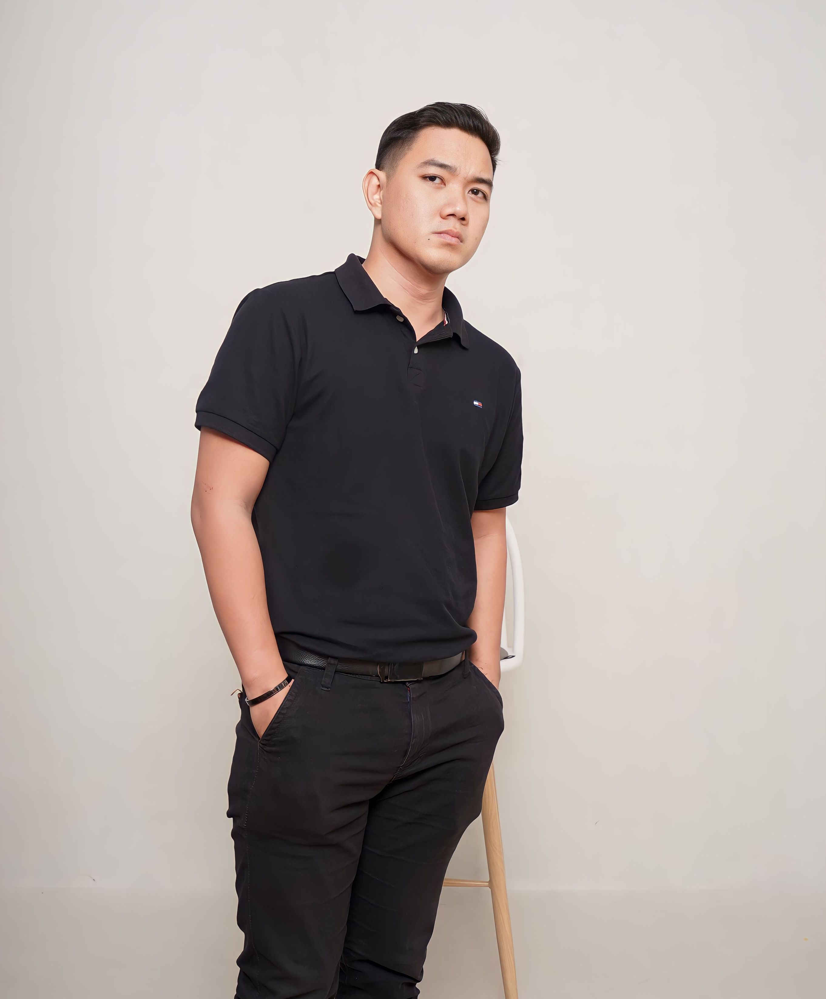

Santo Weng (翁張強)

Web Developer | Frontend Enthusiast | Problem Solver
Selamat Datang di CV Online Saya!
Ini adalah halaman utama dari CV online saya. Silahkan gunakan menu navigasi diatas untuk melihat bagian lain dari CV saya.
Pendidikan
- Universitas Terbuka - Sistem Informasi (2023 - 2027)
- SMA Kristen Maranatha - IPA (2015 - 2018)